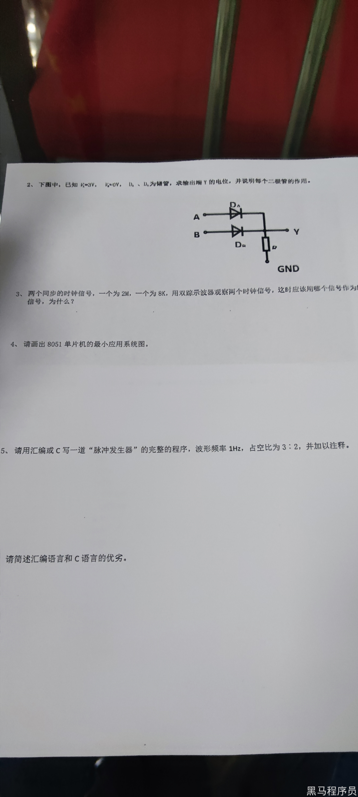
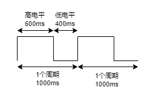

<!DOCTYPE lake>
<h2 data-lake-id="rSZYP" id="rSZYP"><span data-lake-id="ua87840a5" id="ua87840a5">光伏企业</span></h2><p data-lake-id="u957c2e65" id="u957c2e65"><span data-lake-id="uf92f4d68" id="uf92f4d68">11-18K 13薪</span></p><h2 data-lake-id="l7KMc" id="l7KMc"><span data-lake-id="u3577f7de" id="u3577f7de">笔试题</span></h2><p data-lake-id="udd34dace" id="udd34dace"></p><ol list="uf0170241" start="2"><li data-lake-id="uea87eebd" fid="uec1e98fe" id="uea87eebd"><span data-lake-id="ue1c9d6f7" id="ue1c9d6f7">下图中，已知 A = 3V， B = 0V， DA、DB为锗管，求输出端Y的电位，并说明每个二管的作用.</span></li></ol><p data-lake-id="ub7baaac6" id="ub7baaac6"><span data-lake-id="u9c49b91a" id="u9c49b91a">Y的电位不到3V，大概为 2.6V到2.8V。</span></p><p data-lake-id="u1eb3f327" id="u1eb3f327"><span data-lake-id="u8078647c" id="u8078647c">锗管就是二极管。二极管压降一般都在0.2v~0.4v。</span></p><p data-lake-id="ua76b11f3" id="ua76b11f3"><span data-lake-id="udc8443fb" id="udc8443fb">DA和DB可以防止倒灌，A的不能流到B，B的不能流到A。</span></p><p data-lake-id="uc26f80c5" id="uc26f80c5"><br/></p><ol list="uf0170241" start="3"><li data-lake-id="ud770806e" fid="uec1e98fe" id="ud770806e"><span data-lake-id="uebc3b651" id="uebc3b651">两个同步的时钟信号，一个为 2M，一个为 8K，用双踪示波器观察两个时钟信号，这时应该用哪个信号作为</span></li></ol><p data-lake-id="u197c750b" id="u197c750b"><span data-lake-id="u5b0e7094" id="u5b0e7094">信号，为什么?</span></p><p data-lake-id="u824a903e" id="u824a903e"><span data-lake-id="u18a839c3" id="u18a839c3">2M的。以最小粒度的为参考。2M表示1秒钟2000000次的震荡，8K为1秒钟8000次的震荡，需要观察到最小粒度，就必须以2M的进行参考。</span></p><p data-lake-id="ub0b2d093" id="ub0b2d093"><span data-lake-id="u109c0bf5" id="u109c0bf5">​</span><br/></p><ol list="uc834d70d" start="4"><li data-lake-id="u3eb45dbb" fid="u369e37f4" id="u3eb45dbb"><span data-lake-id="u52c65f9f" id="u52c65f9f">请画出 8051 单片机的最小应用系统图。</span></li></ol><blockquote data-lake-id="ubd58d1ef" id="ubd58d1ef"><p data-lake-id="u74f3aacf" id="u74f3aacf"><span data-lake-id="u610c5bef" id="u610c5bef">记不清楚了，得看数据手册，</span></p><p data-lake-id="u12d10180" id="u12d10180"><span data-lake-id="u460bf8b9" id="u460bf8b9">但是要包含外部晶振，提供时钟信号给单片机，stc的单片机可以不接。</span></p><p data-lake-id="ud5f78e78" id="ud5f78e78"><span data-lake-id="u92197578" id="u92197578">VCC和GND为单片机供电。</span></p><p data-lake-id="u0d697c9c" id="u0d697c9c"><span data-lake-id="uc38b37e7" id="uc38b37e7">复位电路，用于将单片机恢复到初始状态。</span></p></blockquote><p data-lake-id="u0593b9c0" id="u0593b9c0"><span data-lake-id="u16722bdb" id="u16722bdb"> </span></p><ol list="uacaf7c8f" start="5"><li data-lake-id="uc4abd03c" fid="u16150d80" id="uc4abd03c"><span data-lake-id="u88b6446e" id="u88b6446e">请用汇编或C 写一道“脉冲发生器”的完整的程序，波形频率 1HZ，占空比为 3:2，并加以注释。</span></li></ol><span class="yuque-card-unsupported">[codeblock]</span><p data-lake-id="u2c9c8013" id="u2c9c8013"><span data-lake-id="u7f3e0400" id="u7f3e0400">面试时通常写的都是伪代码，几乎不会写可运行代码，或者通过画图表示逻辑。</span></p><p data-lake-id="u3aa07683" id="u3aa07683"></p><ol list="u9e437fe5" start="6"><li data-lake-id="u5f4d6c85" fid="ue0bb9231" id="u5f4d6c85"><span data-lake-id="uadc24876" id="uadc24876">请简述汇编语言和 c 语言的优劣。</span></li></ol><blockquote data-lake-id="ud21824c8" id="ud21824c8"><p data-lake-id="uc5503dd0" id="uc5503dd0"><span data-lake-id="u4f661b11" id="u4f661b11">汇编语言优势在于对硬件的直接控制能力强，可以精确地操作计算机的底层资源。但是编写复杂程序时需要较多代码，可读性差。</span></p><p data-lake-id="ucd85ba59" id="ucd85ba59"><span data-lake-id="u7373e7a6" id="u7373e7a6">C语言优势在于可移植性好，易学易用，代码相对简洁。它提供了丰富的库函数和高级特性，适用于开发大型项目。</span></p></blockquote><p data-lake-id="ue090fac4" id="ue090fac4"><br/></p><p data-lake-id="u8f488c97" id="u8f488c97"><br/></p>